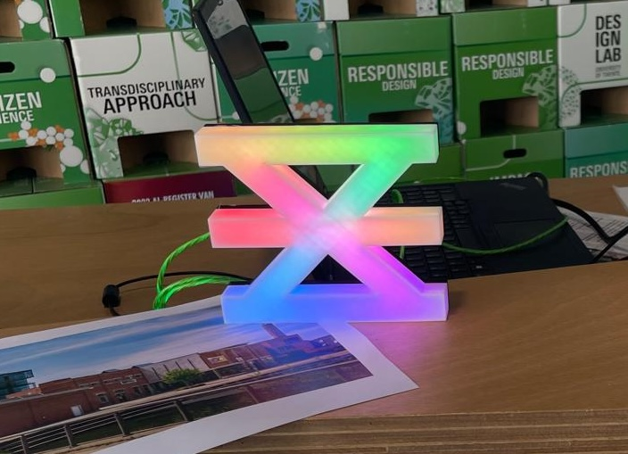
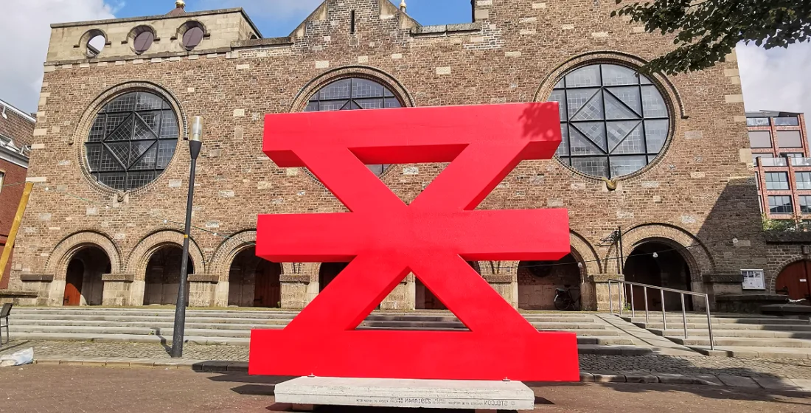
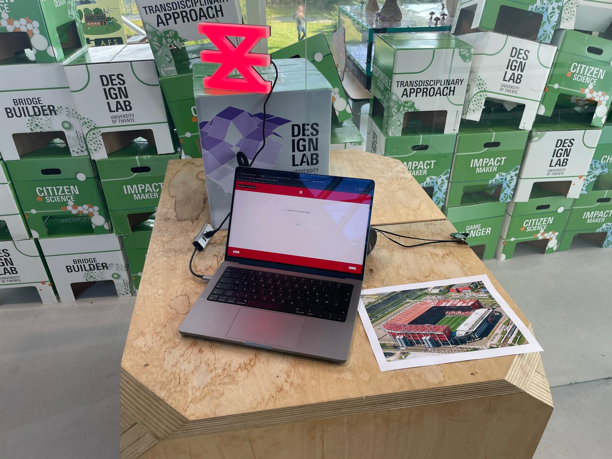
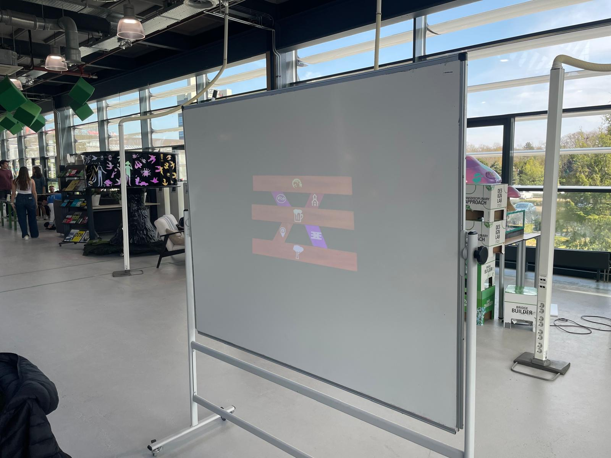
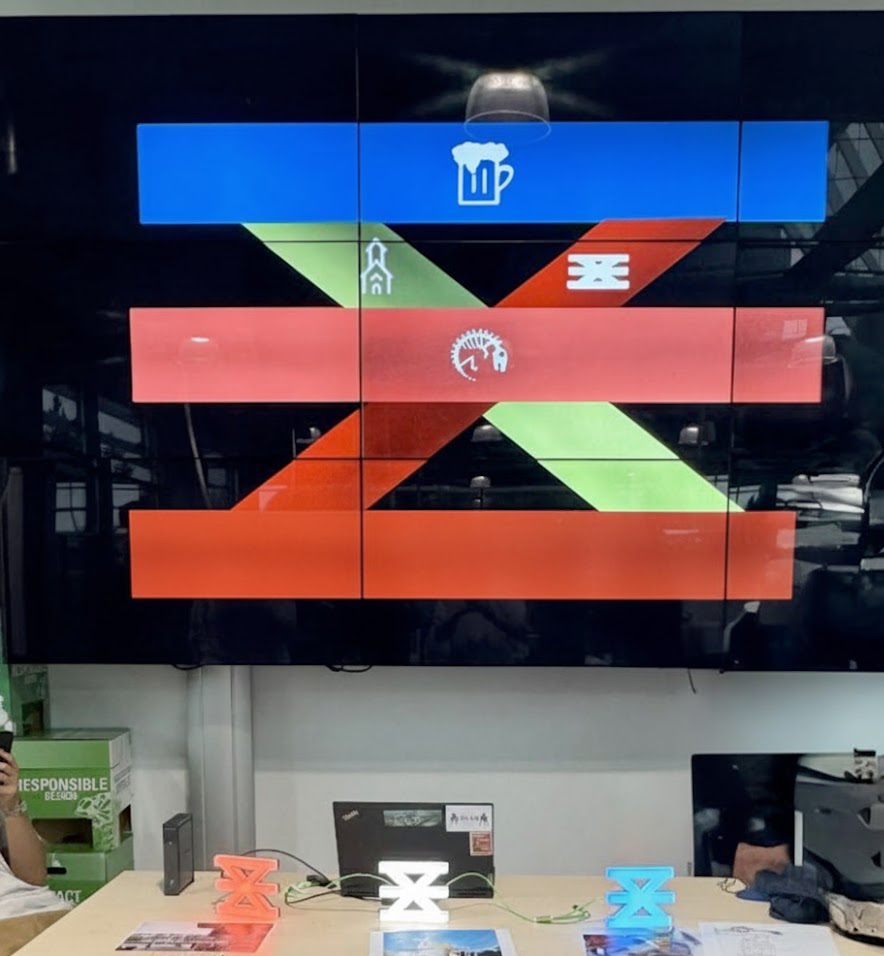

The Tourism Game for Enschede Promotie
Date
February-April 2025
Project Type
Academic
Roles
UX Research and Design, Software Engineer
Skills
User Interviews, User Testing, Projection Mapping, Python Scripting
Enschede Promotie approached Creative Technology students with the intention of transforming the tourism experience, and aligning its values with its presentation.
After a meeting with the client, our team of 6 students created an IoT game that allowed tourists to explore the city's landmarks in a technology-forward way.
During this project, I was responsible for user experience design and user testing. I also facilitated internal brainstorming and storyboarding sessions.
Our efforts culminated in what we called waypoints: devices that tourists would use to capture a landmark, while a general map of the area showed which user had claimed which landmarks.


After our initial conversation with the client, we discovered that this project was part of a larger goal to redefine Enschede as a culturally rich yet innovative and creative environment.
We conducted an internal storyboarding session where the team highlighted what we thought the problem with the current experience was.
We discovered that a majority of the team felt friction with the flow of discovering a city. Most used social media or other platforms to find activities in foreign cities.
The team decided to pursue the creation of a dedicated way of interacting with a city through technology.
After a brainstorming session, we decided on three ideas that would be presented to the client. Among them was our final concept: a capture-the-flag-style game that used what we would later call waypoints.
These waypoints would be placed on landmarks, and when users approached them, they could use their mobile devices to claim that landmark.
Another key feature of the waypoint was that the model would be scalable. Local businesses could also be marked as waypoints, allowing tourists to discover them while immersing themselves in the culture of the city.


Our first, lo-fi prototype was a set of two pieces. One was a technical implementation of what the waypoint could look like. I created the second piece of the concept: a simulated experience made of paper.
In this first instance, testers, depicted as colorful paper balls, would traverse a map. Each time they reached a destination, the sign would light up in a certain color.
During these early stages, I made note of users' feedback and emotional states throughout the pretend experience, which informed the team's design decisions.
Some users reported a lack of motivation to finish the experience, while others enjoyed the distributed nature of the game.
After the success of Prototype 1, the team iterated based on user and client feedback, creating a higher fidelity version of the project.
This version was now a fully distributed system, capable of logging different users with their selected colors.
To address user feedback from the first prototype, proper goal definition became a priority. In our second iteration, we tested an area capture display, which showed the waypoint's color in real time so that users felt a sense of competition and reward for capturing chunks of a map.
My responsibility during this period was to conduct user tests and interviews to determine what needed further refinement before the final demonstration.

These user tests demonstrated that our iterative work had translated the first prototype into a fully functional system. Users reported that the prototype felt easy to use, with the average completion time of a trial being just under 10 minutes, compared to the benchmark set by a team member of 8:30 minutes.
In our post-use-evaluation interviews, we found that users created their own rules. One tester attempted to collect as many waypoints as possible in the shortest amount of time, while others enjoyed the exploratory aspects of the game.
Users also reported that our second iteration felt much more rewarding. By adding the overview, they felt a sense of progression and a desire to continue playing.
The final concept was demonstrated at a demo market, where we showcased the complete waypoint system to Enschede Promotie and other stakeholders.
The demonstration validated our approach: visitors engaged naturally with the game, exploring the space while competing to claim waypoints.
The waypoint concept achieved its goal of creating a technology-forward tourism experience that aligned with Enschede's values of innovation and cultural richness, while providing an engaging, scalable platform for visitors to discover the city.
Following the successful demonstration, we handed off the project to Enschede Promotie for implementation in and around the city.
This project marked an important milestone in developing my research skills. While I had theoretical knowledge of user testing and interview methodologies, this was my first opportunity to apply these practices.
Looking back, I recognize moments where more refined approaches would have yielded deeper insights.
These early experiences with research and observation shaped how I think about UX practices and strengthened my commitment to continuously refining my research in future projects.